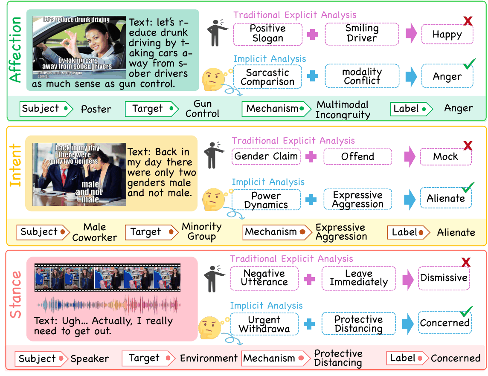
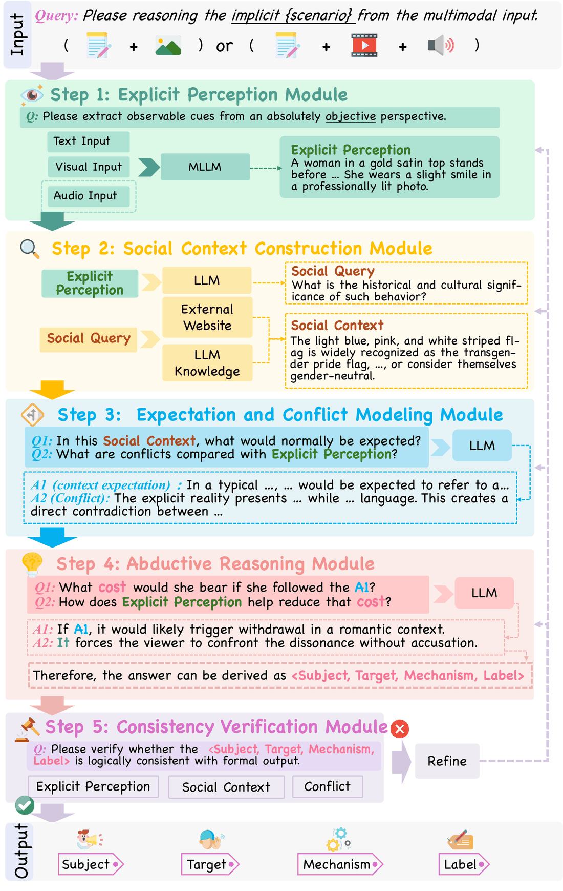

01936 instances
Affection
What does the subject truly feel?
Recover an emotional state conveyed indirectly or concealed through strategic expression.
A benchmark for multimodal social reasoning
Understanding what is left unsaid.
A multimodal benchmark for reasoning about hidden emotions, intentions, and social stances.
01
Scenarios
Social meaning is not always expressed directly. A smile can conceal frustration; a seemingly benign remark can pursue a hidden goal. Interpreting these signals requires reasoning about social relationships, cultural context, and the gap between an observed expression and its underlying meaning.
MoCA formalizes this challenge across affection, intent, and stance. Rather than predicting an isolated label, the task recovers a structured interpretation: the subject, target, realizing mechanism, and latent social label.
Affection / Emotional state
A smiling face and a positive slogan do not determine the latent emotion. The cross-modal comparison is essential to the interpretation shown here.
Intent / Behavioral goal
Recognizing an offensive statement is only part of the task. The interpretation also identifies its target and the social goal it serves.
Stance / Social positioning
The same wish to leave can express dismissal or concern. Context is needed to recover the subject’s position toward the environment.
Illustrations from the MoCA task overview, not live model predictions.

02
The benchmark
3,108 real-world multimodal instances, annotated to connect observable evidence with latent social meaning.
What does the subject truly feel?
Recover an emotional state conveyed indirectly or concealed through strategic expression.
What does the subject aim to achieve?
Infer a behavioral goal that is not explicitly stated in the observable words or actions.
How does the subject position themselves?
Identify an implicit position toward a target, including relational dynamics and power posture.
Each prediction contains four connected components.
Evaluation measures component accuracy, subject–target alignment, mechanism accuracy given a correct label, and correctness of the complete four-component output.
03
The framework
CoDAR · Conflict-Driven Abductive Reasoning
Why this expression, in this context? CoDAR uses the conflict between observed expression and contextual expectation to infer the latent social state that explains it.
Ground the analysis in observable textual, visual, temporal, and speech evidence.
Identify relevant facts, relationships, and social norms using model knowledge and, where needed, external retrieval.
Establish what would normally be expected, then locate the discrepancy with the observed expression.
Explain the strategic function of that conflict and recover a subject–target–mechanism–label tuple within the scenario’s candidate space.
Check the interpretation against the evidence, social context, and mechanism; revisit inconsistent components.

04
Resources
Access the benchmark annotations, reasoning scaffold, prompt contracts, and example cases.
Coder12188 / MoCAFind the image, video, and audio assets corresponding to MoCA’s annotated instances.
z4722 / Implicit_datasetThe lightweight annotation JSON is hosted in the code repository; corresponding media are hosted on Hugging Face. The code repository documents the reference scaffold and its current scope.